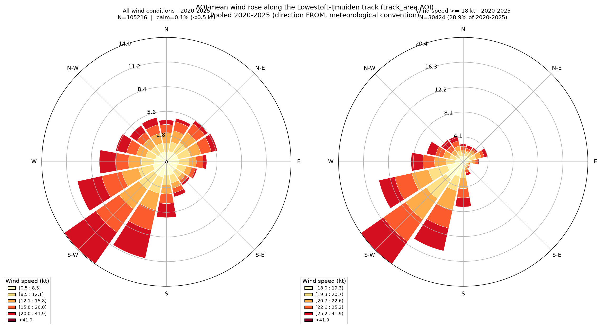
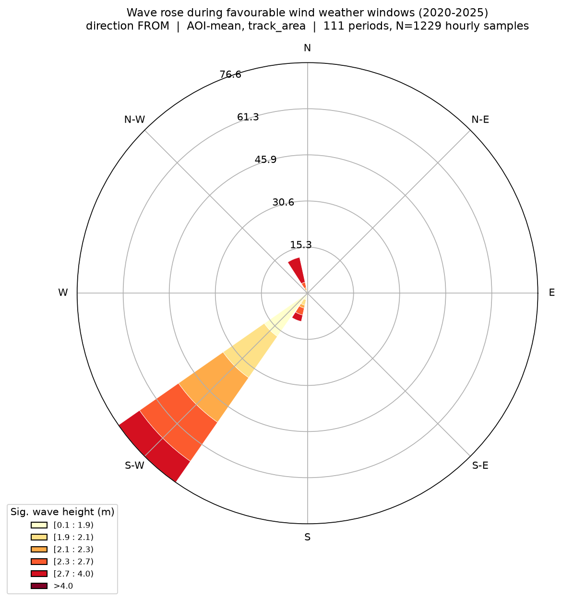
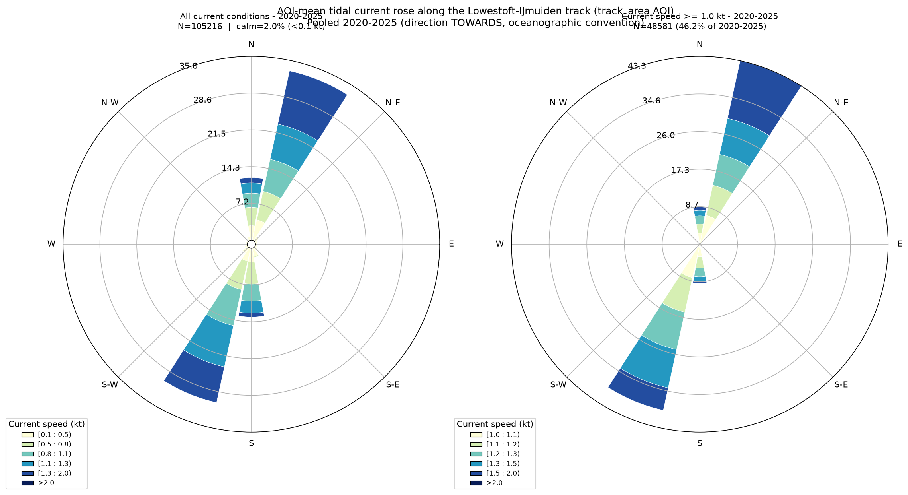

Historical weather conditions
Past weather patterns and historical data for the crossing area, covering the Lowestoft–IJmuiden track.
The sea climate
The Lowestoft-IJmuiden route crosses the southern North Sea, a shallow shelf sea where weather conditions are dominated by Atlantic low-pressure systems and strong tidal dynamics. Prevailing winds are south-westerly, although northerly and easterly winds occur regularly and can rapidly change sea state. Waves are usually short-period, wind-driven seas rather than long ocean swell, with steep and energetic conditions developing quickly during strong winds due to the limited water depth and long fetch across the North Sea.
Wind and wave roses — Lowestoft–IJmuiden track
Frequency of wind and wave conditions by direction along the crossing, derived from multi-year model data (2020–2025). These roses summarize how often winds and waves come from each compass sector, and at what strength, giving a sense of the typical and extreme conditions to expect on the route.


How to read these: each ring of the circle is a compass direction — the further a colored wedge stretches out from the center, the more often wind (or waves) came from that direction. The colors within a wedge show how strong the wind or waves usually were when coming from that direction, from lighter (weaker) to darker (stronger).
These roses are derived from historical model data (2020–2025). The wind conditions are based on ERA5 reanalysis. Waves are based on hindcast conditions from the NWECS (North-West European Continental Shelf) wave model (based on SWAN).
Tidal current rose — Lowestoft–IJmuiden track
Frequency of tidal current speed and direction along the crossing, derived from the 2020–2025 hydrodynamic hindcast. Semi-diurnal tides drive currents that reverse roughly every six hours; this rose shows how often flow runs in each direction and at what strength, including how conditions look when currents run stronger.

How to read this: the wedges show which direction the current usually flows towards, and how far each wedge reaches out shows how often it flows that way. The colors show how fast the current typically runs in that direction — lighter for slower flow, darker for faster flow. Because tides reverse roughly every six hours, you'll usually see two opposite clusters of wedges rather than one dominant direction.
Derived from historical model data (2020–2025) produced by the Delft3D-FM 2D 0.5nm regional hydrodynamic model driven with ERA5 reanalysis.